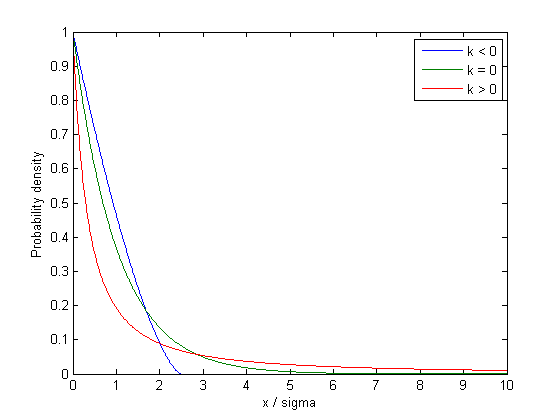
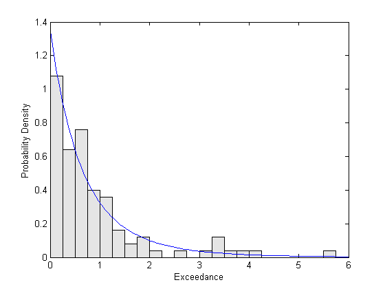
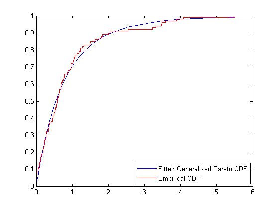
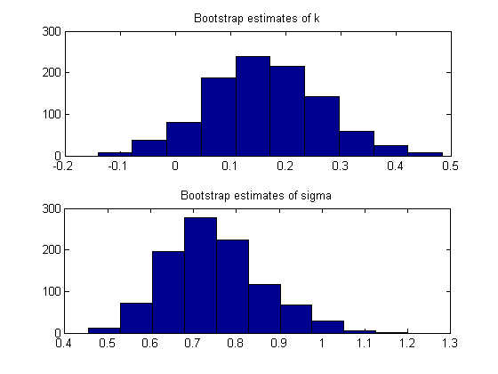
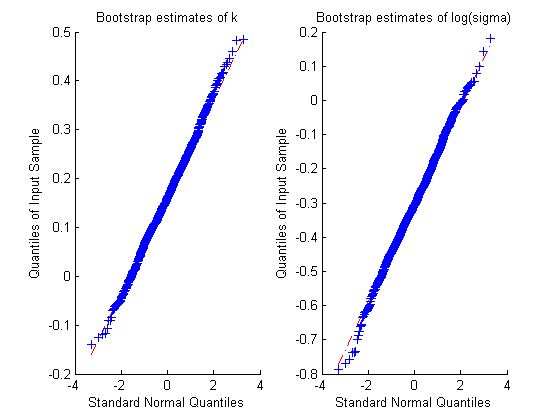

一般化パレート分布での裾のデータのモデル化
データへのパラメトリック分布の近似を行った場合、その結果が、高密度領域内のデータに高い精度で一致し低密度領域内のデータに低い精度で一致するモデルになることがあります。法線やスチューデントの t などの単峰型分布の場合、これらの低密度領域は、分布の「裾」と呼ばれます。モデルの近似が裾で低い理由は、定義により、モデルの選択の元になる裾にあるデータが少ないので、モードに近いデータを近似する能力に基づいてモデルが選択されることがあるからです。もう 1 つの理由は、実数データの分布が通常のパラメトリック モデルよりも複雑な場合があるからです。
しかし、多くの応用において、裾のデータの近似は主要な懸念です。一般化パレート分布 (GP) は、理論的議論に基づいて、さまざまな分布の裾をモデル化できる分布として開発されました。GP が関与する分布近似への 1 つのアプローチは、多くの観測値がある領域で非パラメトリック近似 (経験累積分布関数など) を使用し、データの裾に GP を近似することです。
この例では、この分布を最尤度によって近似するために Statistics Toolbox™ の関数を使用して GP を裾データに近似する方法を示します。
目次
一般化パレート分布
一般化パレート (GP) は、形状パラメーター (k) およびスケール パラメーター (sigma) でパラメーター化され、右に歪んだ分布です。k は "裾の指数" パラメーターとも呼ばれ、正、0、または負である場合があります。
x = linspace(0,10,1000); plot(x,gppdf(x,-.4,1),'-', x,gppdf(x,0,1),'-', x,gppdf(x,2,1),'-'); xlabel('x / sigma'); ylabel('Probability density'); legend({'k < 0' 'k = 0' 'k > 0'});
k < 0 の場合、GP は -(1/k) の上限より上の 0 確率を持ちます。k >= 0 の場合、GP の上限はありません。また、GP は、下限を 0 からシフトする 3 番目のしきい値パラメーターと組み合わせて使用されることがあります。ここでは、この一般性は必要ありません。
GP 分布は、指数分布 (k = 0) とパレート分布 (k > 0) の両方の一般化です。GP は、大きなファミリー内でこれらの 2 つの分布を含むので、形状の範囲を連続的にとることができます。
超過データのシミュレーション
GP 分布は、超過を条件として直接定義できます。右裾が 0 の方向に下がる確率分布 (法線など) から始めて、その分布から個々にランダム値をサンプリングできます。しきい値を固定し、しきい値より下のすべての値を排除して残った値からしきい値を減算した場合、その結果は「超過」と呼ばれます。超過の分布は、ほぼ GP です。同様に、分布の左裾のしきい値を設定して、そのしきい値より上のすべての値を無視できます。適切な近似を取得するには、しきい値は、オリジナルの分布の裾から十分に離れている必要があります。
結果の GP 分布の形状パラメーター k は、オリジナルの分布によって決定されます。スチューデントの t 分布のように、多項式減衰する裾を持つ分布は、正の形状パラメーターを持ちます。正規分布のように、指数減衰する裾を持つ分布は、0 の形状パラメーターに相当します。ベータ分布のように、分布の裾が有限の場合は、負の形状パラメーターに相当します。
実世界における GP 分布の応用には、株収益の極値のモデル化や異常洪水のモデル化があります。この例では、5 の自由度のスチューデント t 分布から生成されたシミュレートされたデータを使用します。t 分布から 2000 の観測の最大 5% を取り、95% 分位数を減算して超過を取得します。
randn('state',0); rand('state',0); x = trnd(5,2000,1); q = quantile(x,.95); y = x(x>q) - q; n = numel(y)
n = 100
最尤を使用した分布の近似
GP 分布は、0 < sigma および -Inf < k < Inf に対して定義されます。しかし、k < -1/2 の場合、最尤推定の結果の解釈は問題となります。幸い、これらのケースは、ベータや三角形のような分布からの裾の近似に該当するので、ここでは問題になりません。
paramEsts = gpfit(y); kHat = paramEsts(1) % Tail index parameter sigmaHat = paramEsts(2) % Scale parameter
kHat =
0.1722
sigmaHat =
0.7359
予期されたように、シミュレートされたデータが t 分布を使用して生成されたので、k の推定値は正です。
近似の視覚的なチェック
近似の程度を視覚的に評価するために、推定した GP の密度関数で重ねて、裾データのスケーリングされたヒストグラムをプロットします。ヒストグラムはスケーリングされているので、バーの高さと幅の積は 1 です。
bins = 0:0.25:7; h = bar(bins,histc(y,bins)/(length(y)*.25),'histc'); set(h,'FaceColor',[.9 .9 .9]); ygrid = linspace(0,1.1*max(y),100); line(ygrid,gppdf(ygrid,kHat,sigmaHat)); xlim([0,6]); xlabel('Exceedance'); ylabel('Probability Density');
比較的小さいビンの幅を使用したので、ヒストグラムには多くのノイズがあります。それでも、近似密度はデータの形状に従うので、GP モデルは正しい選択であると思われます。
経験累積分布関数と近似累積分布関数を比較することもできます。
[F,yi] = ecdf(y); plot(yi,gpcdf(yi,kHat,sigmaHat),'-'); hold on; stairs(yi,F,'r'); hold off; legend('Fitted Generalized Pareto CDF','Empirical CDF','location','southeast');
パラメーター推定の標準誤差の計算
推定の精度を定量化するために、最尤推定量の漸近共分散行列から計算された標準誤差を使用します。関数 gplike は、2 番目の出力として、その共分散行列への数値的近似を計算します。また、2 つの出力引数で gpfit を呼び出して、パラメーターの信頼区間を取得することもできます。
[nll,acov] = gplike(paramEsts, y); stdErr = sqrt(diag(acov))
stdErr =
0.1231
0.1160
これらの標準誤差は、k の推定値の相対精度が sigma の推定値よりも顕著に低いことを示します。その標準誤差は、推定値自体に依存します。形状パラメーターは推定することが困難な場合があります。これらの標準誤差の計算では、GP モデルが正しいことが前提となること、および共分散行列への漸近的近似に対して十分なデータがあることが前提となります。
漸近的正規性の前提のチェック
通常、標準誤差の解釈では、同じソースのデータに対して同じ近似を繰り返すことができる場合、パラメーターの最尤推定値は正規分布とほぼ同じであることが前提になります。たとえば、信頼区間は、この前提に基づくことがあります。
しかし、正規近似は正確である場合と正確でない場合があります。この例で正規近似の程度を評価するために、ブートストラップ シミュレーションを使用できます。データから再度サンプリングして 1000 の複製データセットを生成し、それぞれに対して GP 分布を近似してすべての複製推定値を保存します。
replEsts = bootstrp(1000,@gpfit,y);
パラメーター推定値のサンプリング分布のおおまかなチェックとして、ブートストラップ複製のヒストグラムを確認できます。
subplot(2,1,1), hist(replEsts(:,1)); title('Bootstrap estimates of k'); subplot(2,1,2), hist(replEsts(:,2)); title('Bootstrap estimates of sigma');
パラメーター変換の使用
sigma の推定値のヒストグラムは右に歪んでいますが、k のブートストラップ推定値のヒストグラムは若干非対象に見えます。その歪みの一般的な修復は、正規近似の精度が高いと思われる対数スケール上でパラメーターとその標準誤差を推定することです。非正規性は、直線への一致が低い点として表示されるので、Q-Q プロットはヒストグラムよりも正規性の評価に適しています。sigma の対数変換が適切かどうかを確認して、このことをチェックします。
subplot(1,2,1), qqplot(replEsts(:,1)); title('Bootstrap estimates of k'); subplot(1,2,2), qqplot(log(replEsts(:,2))); title('Bootstrap estimates of log(sigma)');
k と log(sigma) のブートストラップ推定値は正規性に十分近いと思われます。非対数スケール上の sigma の推定値の Q-Q プロットは、ヒストグラムで確認した歪みを証明します。したがって、最初に正規性の仮定の下に log(sigma) の信頼区間を取得し、次に累乗してその区間を sigma のオリジナルのスケールに変換することによって信頼性区間を構築する方が適切です。
事実、これは、関数 gpfit が背後で行う処理です。
[paramEsts,paramCI] = gpfit(y);
kHat kCI = paramCI(:,1)
kHat =
0.1722
kCI =
-0.0690
0.4135
sigmaHat sigmaCI = paramCI(:,2)
sigmaHat =
0.7359
sigmaCI =
0.5403
1.0023
最尤推定に関して k の 95% 信頼区間は対称ですが、sigma の信頼区間は非対象です。これは、log(sigma) の対称 CI を変換することによって作成されたからです。